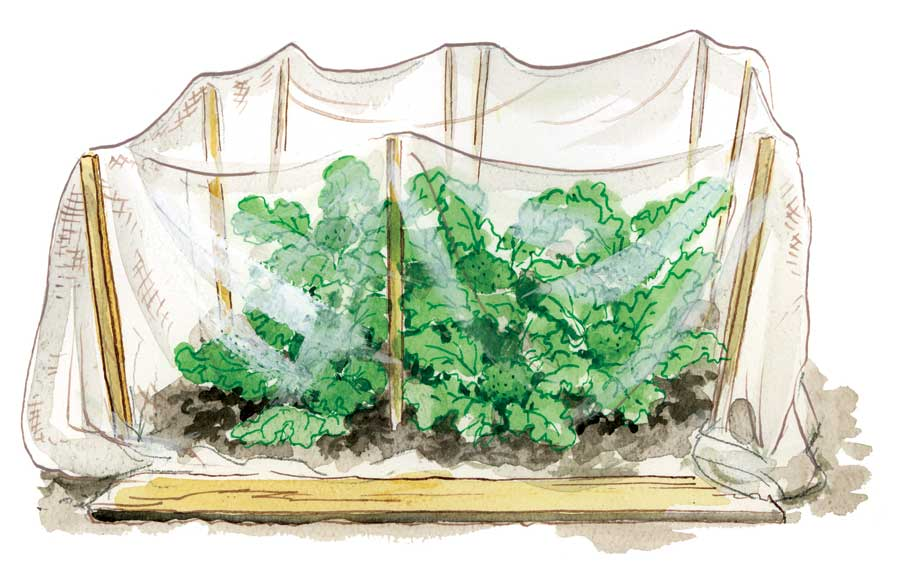

Keeping Up With Your Garden
Here are 35 tips to help you handle pest control, weeding and other peak-summer garden chores.
By Barbara Pleasant
June/July 2009
Like many gardeners, I’m more of a planter than a picker. I’d rather poke bean seeds into the ground than gather my 10th basket of squash, which leads to trouble when time gets tight in midsummer. Sound familiar? You can use the guidelines below to keep your garden working efficiently on days when time is short but your task list is long.
Harvest What’s Ready
Harvesting what’s ready should always be your top priority. But we’ve all slipped at least once: We get so busy planting, and then taking care of new plantings, that we miss harvesting the world’s finest lettuce at its peak. Make harvesting what’s ready your top priority.
To streamline the harvesting process, think in terms of strategic staging. Pick in the morning, and stash your goodies in a shady spot to keep them cool. When you have a lot to gather, make ice pancakes by freezing water in flat sandwich bags, then layer them among your harvested veggies in a portable insulated cooler. This trick can save a lot of trips back and forth to the refrigerator.
Speaking of efficiency, every veggie gardener needs a place within pitching distance of the compost pile - and within easy reach of water - for grooming and cleaning the day’s pickings. An ideal veggie-cleaning station stands about waist high, and is sturdy enough to serve as a cutting surface. You can build such a table from scrap lumber, find a cheap or free one through thrift stores or sharing databases, such as Freecycle or Craigslist, or erect a temporary table using boards and sawhorses.
The most deluxe garden work stations include a secondhand sink, or you can fill a big bucket, tub or wheelbarrow with several inches of water before you start picking. Use this water to dunk or swish freshly harvested salad greens or other vegetables before giving them a second cleaning in a colander. You can leave the dirty water out all day, and use it to rinse hands, feet, pots and tools until evening. Dip out water as needed for thirsty plants, and dump the muddy slurry on your compost pile.
Thrift stores are great places to find other items that make harvesting go fast, such as old steak knives and a large cutting board. Keeping up with the whereabouts of a single knife creates work, but keeping several stashed around the garden (out of reach of young children) saves time and frustration. When you have a cutting board, knives, a work surface, water and a disposal site staged in the garden, you will be less likely to bring mud-caked radishes or gritty greens through the kitchen door.
This time of year, when the kitchen is needed for regular cooking and food preservation projects, do everything you can to keep dirt in the garden (and out of the kitchen). For example, bringing a small bunch of pulled carrots indoors to clean makes a trail of dirt, muddies your sink and fills up your compost bucket. Compare and contrast: Swish pulled carrots in a bucket of water, wash a bit more with the hose, lop off the tops directly into your compost pile, and then head to the kitchen - if you don’t eat the carrots first.
Protect At-risk Crops
Few gardeners will make it through the summer without encountering challenges from insect pests. Depending on where you live, it may be essential to use row covers to protect cucumber-family crops from squash bugs, squash vine borers and/or cucumber beetles. Cabbage-family crops (especially seedlings set out in June and July for fall harvest) require protection from cabbageworms, army worms and grasshoppers. You can use row covers made from breathable spunbound polyester (sold by most seed companies) or make your own from lightweight cloth, such as wedding net (tulle). Lightweight covers also can take the edge off of searing sunlight. The most lightweight row covers reduce light transmission by 10 percent when they are clean, and more after they get dirty. See The No-spray Way to Protect Plants to learn more about using row covers.
If insect pressure is light, you can probably manage the problem with close monitoring, handpicking, or by using an appropriate organic insecticide. The most up-to-date organic pest controls are covered in our Guide to Organic Pest Control article but don’t assume you will need to spray. In my large garden, I may use a single application of Bt (Bacillus thuringiensis, a trusted old biological pesticide that gives leaf-eating caterpillars a terminal bellyache) to make sure broccoli and cabbage plants are clean of tiny caterpillars before I install a row cover. But in my experience, insect problems are either serious enough to merit use of row covers, or so minor that they can be managed by handpicking or pulling out badly infested plants.
Increase Your Bounty Through Relay Plantings
An early start in spring (including season-stretching cloches and tunnels), will set your garden up to handle relay plantings, in which space used for one crop is quickly switched to another (with a heaping helping of compost in between). For instance, many gardeners are able to follow spring lettuce with a quick crop of bush snap beans, or slip in some carrots after spring peas. In long-summer climates, garden space almost always supports two crops a year, and sometimes even three.
Finding crop relays that work for you will take some trial and error. You can consider various possibilities by checking our monthly What to Plant Now charts for your region. Also, watch what’s being harvested and planted at local organic farms, which often run tight relays. Heat-tolerant plants - such as squash, tomato and tomatillo, which are easily grown in containers - can make quick work of relay planting. For example, you could harvest the last of a lettuce bed, mix in some compost, and pop in a few summer squash seedlings within an hour.
Many gardeners wince when they realize that the best planting dates for fall Brussels sprouts, broccoli and other cabbage cousins come during the most torrid days of summer, but it can be done! Start seeds indoors, and then shift them outdoors as they gain size. Pot them up as needed to keep the roots from getting crowded, and set them out under row covers during a period of cloudy weather.
Provide Constancy of Care
Watering, weeding and many other repetitive tasks fall under this guideline, so it’s important to use methods that have some staying power. When the root zones of tomatoes, peppers and other summer crops are covered by 2 to 3 inches of biodegradable mulch, far less moisture evaporates from the soil, making it much easier to maintain a constant level of soil moisture, which in turn reduces problems with fruit cracking and blossom end rot. With or without mulch, drip or soaker hoses make it easy to water your crops while you attend to other things, so they save you time and save your plants from trouble.
Expect weeding to take up a good bit of time, whether you do it by hand or with a hoe. Weed early and often, because plants are held back by weed density and the duration of the weeds’ stay. In beans, tomatoes and many other crops, moderate weed competition can reduce yields by more than 25 percent. This time of year, pulled or chopped weeds shrivel in the sun so quickly that you can use many to mulch between plants. Or, toss them on your compost pile. With the help of warm summer temperatures, a small mountain of weeds pulled in June will be compost by September.
Many evenings you will work until dark, and look up to find yourself in the company of fireflies and sphinx moths. This is one of the best times to stop what you’re doing, breathe deeply, and marvel at what you have been able to do by combining sun, sweat and soil.
 ELAYNE SEARS Providing an outdoor work station right in the garden can cut down on messes in your kitchen and time spent readying your harvest for eating. Install an old sink in a sturdy work table and attach a drain hose to drain wash water and dirt onto your compost pile. Keep a few knives handy for harvesting tough-stemmed crops. |
 ELAYNE SEARS Use barriers made from row cover or other lightweight, breathable fabric to protect plants from insect and animal pests. Hold the fabric aloft with stakes or hoops to prevent abrasion to new growing tips. Use a permanent marker to label any pieces of row cover that you have specially sized to fit certain beds. |
|